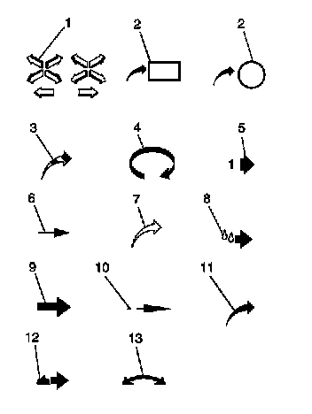

Arrows and Symbols
Arrows and Symbols
This service manual uses various symbols in order to describe different service operations.
Arrows and Symbols:

1 - Front of Vehicle
2 - View Detail
2 - View Detail
3 - Ambient Air Mixed With Another Gas or Indicate Temperature Change
4 - Motion or Direction
5 - View Angle
6 - Dimension (1:2)
7 - Ambient/Clean Air Flow or Cool Air Flow
8 - Lubrication Point - Oil or Fluid
9 - Task Related
10 - Sectioning (1:3)
11 - Gas Other Than Ambient Air or Hot Air Flow
12 - Lubrication Point - Grease or Jelly
13 - Multidirectional Arrow